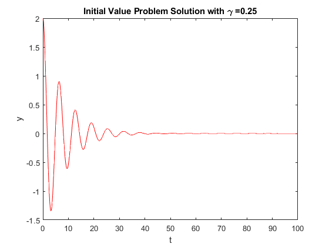

gamma_0=0.25;
gamma_list =linspace(0.05,1.99,100);
init = [2 0]';
y_thres =init(1)*0.001;
dy_thres = 0.002;
t_span = [0 25/gamma_0];
[t,y] = ode45(@(t,y) p1(t,y,gamma_0),t_span,init);
tau = negligible(t,y,y_thres,dy_thres);
temp_funct = @(gamma) tau_gamma_pair(@p1,init,gamma,y_thres,dy_thres);
[tau_series,gamma_series] = arrayfun(temp_funct,gamma_list);
tau_a = arrayfun(@analytic,gamma_list);
f1=figure("name","Differential Equation Solution gamma=0.25");
plot1 = plot(t,y(:,1),'r');
title('Initial Value Problem Solution with \gamma =0.25')
xlabel('t')
ylabel('y')
f2=figure("name","Analytic Solution vs. Estimation Algorithm");
plot2 = plot(gamma_list,tau_a);
hold on;
plot3 = plot(gamma_series,tau_series,'rx');
title('Time Until Solution Fade Out (\tau) vs. \gamma')
xlabel('\gamma')
ylabel('\tau')
function dy = p1(t,y,gamma)
dy = [y(2);-gamma*y(2)-y(1)];
end
function t = negligible(t,y,y_threshold,dy_threshold)
index = (abs(y(:,1)) < y_threshold) & (abs(y(:,2)) < dy_threshold);
t_list=t(index);
t=t_list(1);
end
function [tau,gamma] = tau_gamma_pair(handle,init,gamma,y_thres,dy_thres)
[t,y] = ode45(@(t,y) handle(t,y,gamma),[0 40/gamma],init);
tau = negligible(t,y,y_thres,dy_thres);
end
function tau = analytic(gam)
tau=-2/gam*log(0.002*(4-gam^2)^0.5/4);
end
